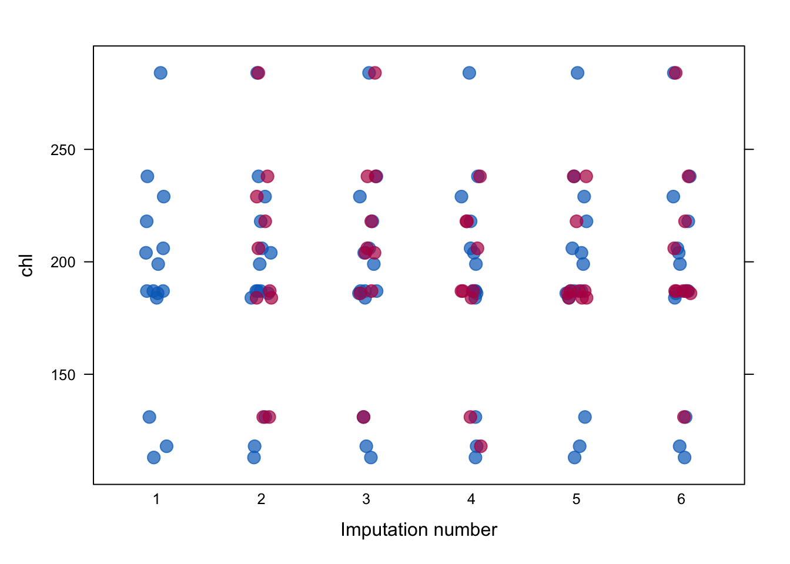

mice::nhanesMICE 소개
Multiple imputation은 평균(mean)이나 중앙값(median) 등 하나의 값으로 결측값을 채워넣는 single imputation과 달리, 결측치(NA)를 여러가지 변수를 고려하여 채워넣는 방법입니다. 즉, NA가 있는 변수 이외의 다른 변수들까지 함께 고려하여, 채워넣을 변수를 지정하는 방법입니다.
R에는 multiple imputation을 도와주는 대표적인 패키지인 mice 가 있습니다. mice는 Multivariate Imputation by Chained Equations 의 약자입니다.
mice를 통해 연속형, 이분형, 범주형 등 다양한 변수들의 결측값들을 채워넣을 수 있습니다.
설치
MICE 를 사용하기 위한 패키지는 아래와 같습니다. mice 패키지를 통해 MICE를 진행하도록 하겠습니다.
mice를 활용한 imputation 매커니즘은 아래의 그림과 같습니다.

mice(): 결측치가 있는 불완전한 데이터에 대해 결측치 대체를 진행합니다. 이 때 결측치가 대체된 여러 개의 데이터를 생성합니다.with(): 결측치가 대체된 각각의 데이터를 활용해 분석을 진행합니다.결측치가 대체된 데이터마다 분석결과가 만들어집니다 (mira, Multiply imputed repeated analysis).pool(): 여러 개의 분석 결과를 합칩니다 (mipo, multiply imputed polled object).
데이터 살펴보기
mice에 내장되어 있는 nhanes 데이터를 이용하도록 하겠습니다.
우선 데이터의 어떤 변수에 NA가 있는지, 결측값의 규칙을 확인할 수 있습니다.
md.pattern(nhanes)
age hyp bmi chl
13 1 1 1 1 0
3 1 1 1 0 1
1 1 1 0 1 1
1 1 0 0 1 2
7 1 0 0 0 3
0 8 9 10 27위 코드를 실행하게 되면, 테이블과 그래프가 함께 출력됩니다.
테이블의 경우, 1이 NA가 아닌 경우, 0이 NA인 경우를 의미합니다.
좀 더 직관적으로 NA의 패턴을 이해하려면 그래프를 보는 것이 좋습니다.
위의 그림에서 파란 색은 값이 존재하는 것이고, 빨간색이 NA인 부분입니다. 그래프를 해석하면 다음과 같습니다.
맨 위는 column별 이름입니다.
오른쪽의 번호는
NA가 있는 개수를 규칙으로 번호를 매긴 것입니다. 예를 들어 0은 age ~ chl까지 하나도 결측치가 없는 것을 의미합니다. 1의 경우에는 4가지 column중NA가 한 군데 존재하는 것을 의미합니다. 3의 경우 4가지 column 중 3개에서NA가 있는 경우를 의미합니다.왼쪽의 번호는 데이터에서 오른쪽의 규칙에 해당하는 row(행)들이 몇 개가 있는지를 나타냅니다. 예를 들어 결측치가 하나도 없는 행은 전체 데이터에서 총 13개이고, 결측치가
hyp,bmi,chl에 있는 경우는 총 7개의 행이 있다는 것입니다.맨 아래의 숫자 (0, 8, 9, 10)은 각 column별로 존재하는
NA의 합입니다.
Imputation
이제 mice()를 이용하여 NA를 채워넣어보도록 하겠습니다. mice()에서 인자를 설정해줄 수 있는데, 다음과 같습니다.
method: 결측치를 채우는 imputation 방법. 지정해주는 값에 따라 single imputation이 될 수도, multiple imputation이 될 수도 있음.single imputation: mean, median, norm.predict 등
multiple imputation: pmm, rf, cart 등
m:NA를 채운 multiple imputation 데이터셋의 수maxit: multiple imputation 값을 지정할 때 iteration 횟수seed: 동일한 결과 출력을 위한 난수 지정
m의 경우 imputation 된 데이터의 개수인데, m이 높을수록 정확성이 올라가지만, imputation 되는 데 시간이 많이 소요됩니다.
maxit의 경우, MCMC(Markov Chain Monte Carlo) 알고리즘을 이용해 반복을 하게 되는데, 이 때 반복할 횟수를 지정해주게 됩니다. maxit이 높을수록 알고리즘의 수렴도가 개선되지만, m과 마찬가지로 계산시간이 오래 걸릴 수 있습니다.
Note
mice 패키지의 창시자 Van Buuren (2018)은 “iteration의 수는 변수 간 상관관계와 변수의 결측 비율에 따라 달라진다”고 이야기했습니다. 그는 또한 5-20번의 반복이면 결과가 제대로 수렴할 것이라고 이야기했습니다.
Tip
Monte Carlo
통계적인 수치를 얻기 위해 수행하는 시뮬레이션. 통계학의 특성 상, 무수히 많은 시도를 거쳐야 정답을 파악할 수 있지만, 현실적으로는 불가능하기 때문에 유한한 시도를 통해 정답을 추정하는 것.
Markov Chain
어떤 상태에서 다른 상태로 넘어갈 때, 바로 전 단계의 상태에만 영향을 받는 확률 과정.
예시: 어제 짜장면을 먹은 사람의 경우, 오늘 면 종류의 음식을 먹지 않을 것
MCMC를 수행한다는 것은 첫 샘플을 랜덤하게 선정한 뒤, 그 다음의 샘플링이 추천되는 방식의 시도를 무수하게 해보는 것.
출처: https://angeloyeo.github.io/2020/09/17/MCMC.html
imp <- mice(nhanes,
method = "pmm",
maxit = 5,
m = 5,
seed = 2023,
printFlag = F)
impClass: mids
Number of multiple imputations: 5
Imputation methods:
age bmi hyp chl
"" "pmm" "pmm" "pmm"
PredictorMatrix:
age bmi hyp chl
age 0 1 1 1
bmi 1 0 1 1
hyp 1 1 0 1
chl 1 1 1 0imp는 mice 객체입니다. multiple imputation 횟수와 함께 imputation methods가 등장합니다.
imp 객체는 NA가 채워진 데이터는 물론, imputation 이전 데이터, 채워진 값, NA의 개수, 반복횟수 등의 값을 갖고 있습니다. 예를 들어 imp$method를 통해 변수별 imputation 방법을 확인할 수 있습니다.
attributes(imp)$names
[1] "data" "imp" "m" "where"
[5] "blocks" "call" "nmis" "method"
[9] "predictorMatrix" "visitSequence" "formulas" "post"
[13] "blots" "ignore" "seed" "iteration"
[17] "lastSeedValue" "chainMean" "chainVar" "loggedEvents"
[21] "version" "date"
$class
[1] "mids"imp$method age bmi hyp chl
"" "pmm" "pmm" "pmm" mice의 imputation methods는 다양합니다 (methods(mice) 참고).
mice() 함수에서 method 인자를 통해 imputation 방법을 지정해줄 수도 있습니다.
기본적으로 mice()는 연속형 변수에 대해서는 pmm을, 범주형 변수에 대해서는 logreg를 적용해 NA를 채워넣습니다.
범주형 변수에 대해 자동으로 logreg를 적용하기 위해서는 해당 변수를 character 또는 factor로 변경해주어야 합니다.
nhanes$hyp <- as.factor(nhanes$hyp)
imp2 <- mice(nhanes, method = c("","pmm","logreg","pmm"), printFlag = F)
imp2Class: mids
Number of multiple imputations: 5
Imputation methods:
age bmi hyp chl
"" "pmm" "logreg" "pmm"
PredictorMatrix:
age bmi hyp chl
age 0 1 1 1
bmi 1 0 1 1
hyp 1 1 0 1
chl 1 1 1 0pmm은 hot deck 방법 중 하나입니다. 이 때, hot deck 방법이란, NA가 아닌 데이터를 다른 변수와 매칭시켜 NA를 채워넣는 방법입니다. 쉽게 말해서, NA가 있는 행의 데이터의 다른 열을 바탕으로 NA의 행을 채워넣는 것을 말합니다.
pmm 알고리즘은 쉽게 말해, 특정 변수의 NA가 아닌 값과 다른 변수를 활용하여 NA의 값을 채워넣는 것입니다. 예를 들어 nhanes 데이터의 bmi 변수에 결측치가 있어 이를 채워넣는다고 했을 때, age와 bmi의 관계를 고려하여 bmi의 NA를 채워넣는 것입니다.
Note
좀더 디테일하게 pmm 알고리즘의 과정을 살펴보겠습니다.
bmi변수와 age 변수를 활용하여 regression을 통해 age에 대한 회귀계수 \(\hat{\beta}_{bmi}\) 을 계산합니다.베이지안 회귀분석을 통해 age에 대한 회귀계수 \(\bar{\beta}_{bmi}\) 를 계산합니다.
\(\hat{\beta}_{bmi}\)를 바탕으로 결측치가 아닌 bmi 값들에 대한 관측값 \(bmi_{obs}\)을 예측합니다. 또한 결측치 bmi 값들에 대한 \(bmi_{pred}\) 를 계산합니다. 여기서 \(bmi_{pred}\) 값이 각각 21.5, 23.8, 28.3이 나왔다고 가정하겠습니다.
\(bmi_{obs}\) 와 \(bmi_{pred}\) 의 차이를 구하여 가장 낮은 차이를 갖는 값들을 구합니다. 예를 들어 첫 번째 \(bmi_{pred}\) 값인 21.5와의 차이를 계산했을 때, 1.4, 1.5, 1.7 순으로 낮은 값을 갖습니다.
\(age\) \(bmi\) \(bmi_{obs}\) \(difference\) 1 NA NA NA 2 22.7 23.0 1.5 1 NA NA NA 3 NA NA NA 1 20.4 20.7 1.7 1 22.5 22.9 1.4 1 30.1 30.7 9.2 이후, 낮은 값을 갖는 \(bmi_{obs}\) 의 값인 23.0, 20.7, 22.9 등이 랜덤하게 선택되어,
bmi의NA를 채우게 됩니다.
이처럼 pmm 알고리즘의 장점은 NA를 비현실적인 데이터로 채우는 것이 아니라, NA가 아닌 관측되는 값 중에서 채워넣는다는 것입니다.
logreg 방식도 pmm과 마찬가지로 진행이 됩니다.
mice로 NA를 채워준 이후, 원래 데이터들처럼 잘 채워졌는지 확인하기 위해서 stripplot() 을 통해 분포를 확인해볼 수 있습니다. 파란 점이 관측값, 붉은 점이 NA에서 채워진 값들입니다.
그래프를 봤을 때, imputation된 값들이 일반 관측치들과 거의 유사한 분포를 띄고 있는 것을 확인할 수 있습니다.
stripplot(imp2,
data = chl~.imp,
pch=20,
cex = 2)
Modeling
with 함수를 통해 imputation 객체 내에 있는 결측치 대체 데이터별 모델링을 수행합니다. mice()에서 지정된 imputation 수 (default=5) 별로 각각 모델링이 됩니다.
fit <- with(imp2, lm(chl ~ bmi + age))
fitcall :
with.mids(data = imp2, expr = lm(chl ~ bmi + age))
call1 :
mice(data = nhanes, method = c("", "pmm", "logreg", "pmm"), printFlag = F)
nmis :
age bmi hyp chl
0 9 8 10
analyses :
[[1]]
Call:
lm(formula = chl ~ bmi + age)
Coefficients:
(Intercept) bmi age
-11.89 5.44 35.63
[[2]]
Call:
lm(formula = chl ~ bmi + age)
Coefficients:
(Intercept) bmi age
42.963 3.644 32.914
[[3]]
Call:
lm(formula = chl ~ bmi + age)
Coefficients:
(Intercept) bmi age
-53.261 6.587 36.017
[[4]]
Call:
lm(formula = chl ~ bmi + age)
Coefficients:
(Intercept) bmi age
26.877 5.038 19.503
[[5]]
Call:
lm(formula = chl ~ bmi + age)
Coefficients:
(Intercept) bmi age
15.417 4.626 31.404 Pooling
마지막으로 풀링을 통해, 앞서 만든 5개의 imputation 된 데이터들의 회귀계수, 신뢰 구간, p-value 등을 계산할 수 있습니다.
fit_pooled <- pool(fit)
summary(fit_pooled, conf.int = T)데이터 추출
complete()를 통해 imputation 된 데이터를 내보낼 수 있습니다. mice() 시 m(imputation 횟수)을 5로 주었기 때문에 1~5까지의 imputation 데이터가 존재합니다.
일반적으로 결측치가 대체된 데이터셋은 “long” 을 이용해 데이터를 추출하여 요약통계량을 계산합니다. “long”을 이용하면 5개의 데이터셋이 행 단위로 붙게 됩니다.
Caution
complete() 사용 시, 1~5번 중 하나를 선택하여 데이터셋을 사용하는 것은 잘못된 방법입니다.
dt_imp <- complete(imp2, "long")기술통계량 계산
Warning
해당 부분은 아직까지 공부 중입니다. 확인해본 결과, 아래의 방법들로 기술통계량을 계산할 수는 있으나, 생각보다 번거롭습니다. 더 나은 함수나 패키지가 있는지 확인이 되면 수정하도록 하겠습니다!
지금까지는 mice를 통해 회귀분석 등의 모델링을 하는 방법에 대해 살펴보았습니다.
이제 문제는 multiple imputation된 데이터들을 어떻게 종합하여 baseline table 등을 만들 것인지 입니다. multiple imputation된 데이터에서 각 변수별 기술통계량 또는 요약통계량(descriptive statistics)을 계산하는 방법은 Rubin’s rule을 따라야 합니다.
Rubin’s Rules (RR) 이란 평균, 회귀계수, 표준오차, 신뢰 구간, p-value와 같은 파라미터 측정치들을 풀링하기 위해 고안된 규칙입니다.
한마디로 여러 번 진행된 imputation의 값들을 반영하기 위해, 풀링하여 계산하여야 한다는 뜻입니다.
t-test
multiple imputation 을 위한 t-tests는 MKmisc 패키지의 mi.t.test() 를 이용해 가능합니다. 다만 MKmisc 패키지를 설치하기 위해서는 BiocMananger 를 우선 설치해야 합니다. 그 다음 limma를 설치해주어야 MKmisc를 설치할 수 있습니다.
install.packages("BiocManager")
BiocManager::install("limma")
install.packages("MKmisc")
library(MKmisc)mi.t.test()에 들어가는 값은 complete("long")을 이용해 추출한 전체 데이터를 리스트로 변환한 값, 연속형 변수 x, 범주형 종속형 변수 y입니다.
library(MKmisc)
dt_imp_list <- split(dt_imp, dt_imp$.imp)
MKmisc::mi.t.test(dt_imp_list, x='bmi', y="hyp")
Multiple Imputation Welch Two Sample t-test
data: Variable bmi: group 1 vs group 2
t = -0.020371, df = 8.7977, p-value = 0.9842
alternative hypothesis: true difference in means is not equal to 0
95 percent confidence interval:
-3.954949 3.884601
sample estimates:
mean (1) SD (1) mean (2) SD (2)
26.758382 4.664684 26.793556 3.600881 chi-square
multiple imputation 데이터에 카이제곱 검정을 수행하기 위해서는 miceadds패키지의 micombine.chisquare()를 이용합니다.
install.packages("miceadds")
library(miceadds)imps <- unique(dt_imp$.imp)
dt_imp$hyp <- as.character(dt_imp$hyp) |> as.numeric()
mi_chisq <- lapply(imps, \(x)
xtabs(hyp ~ age, dt_imp, subset = imps==x)) |>
lapply(chisq.test)
mi_chisq[[1]]$statisticX-squared
7.258065 sapply(mi_chisq, \(x) x$statistic) |> miceadds::micombine.chisquare(df=2, display = T)Combination of Chi Square Statistics for Multiply Imputed Data
Using 5 Imputed Data Sets
F(2, 7.94)=-0.111 p=1 ANOVA
ANOVA 또한 miceadds패키지를 이용합니다. mi.anova()를 이용합니다.
mi.anova(imp2, formula = "bmi ~ age")Univariate ANOVA for Multiply Imputed Data (Type 2)
lm Formula: bmi ~ age
R^2=0.2115
..........................................................................
ANOVA Table
SSQ df1 df2 F value Pr(>F) eta2 partial.eta2
age 84.80682 1 558.8433 5.5094 0.01926 0.21146 0.21146
Residual 316.24166 NA NA NA NA NA NA참고자료
https://data.library.virginia.edu/getting-started-with-multiple-imputation-in-r/
https://angeloyeo.github.io/2020/09/17/MCMC.html
https://bookdown.org/mwheymans/bookmi/data-analysis-after-multiple-imputation.html
https://bookdown.org/mwheymans/bookmi/rubins-rules.html
https://nerler.github.io/EP16_Multiple_Imputation/slide/03_analysis_and_pooling.pdf